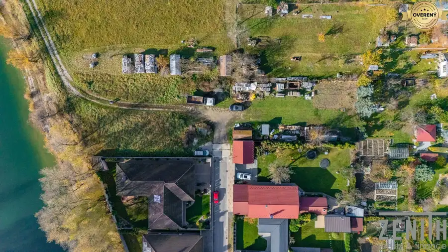
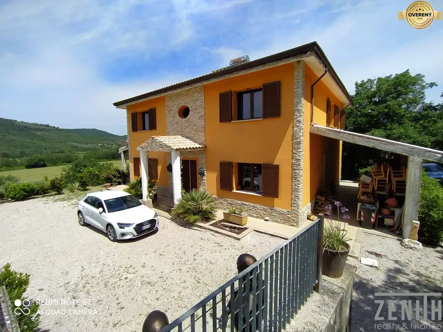
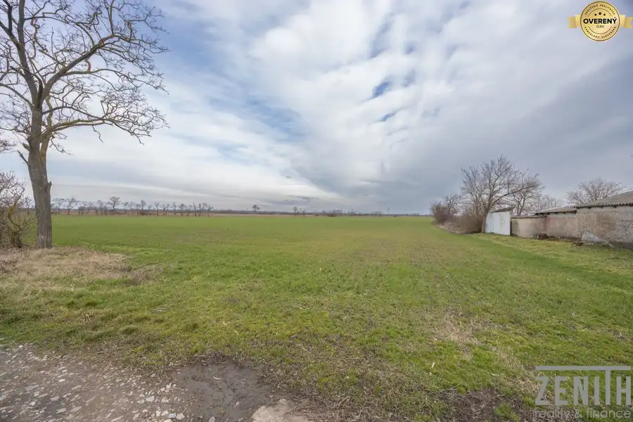

Nádherný 2-izbový byt v Rači s krásnym výhľadom
Rača, Bratislava
- Dispozícia2-izbový
- Plocha62 m²
- Poschodie12. z 1
- Stavčiastočne prerobený
- Vlastníctvoosobné
O nehnuteľnosti
2-izbový byt so zasklennou loggiou a výhľadom na Malé Karpaty – Žarnovická 1, Bratislava-Rača
Ponúkame na predaj priestranný 2-izbový byt o výmere 62m² na Žarnovickej ulici č.1 v Bratislave - Rači. Byt sa nachádza na 12podlaží z 13 podlažného bytového domu. K bytu prislúcha aj pivnica o výmere 1,53m² a zasklená loggia o výmere 3,61m². Byt ponúka ničím nerušený výhľad na Malé Karpaty , vinohrady a západ Slnka. Byt je orientovaný na dve svetové strany – východ a západ. Vďaka veľkému parkovisku je parkovanie bezproblémové.
Byt prešiel čiastočnou rekonštrukciou a disponuje obývacou izbou, samostatnou spálňou, kuchyňou, kúpeľňou, samostatným WC, vstupnou chodbou, chodbou s veľkým murovaným šatníkom a zasklenou loggiou. Obývacia izba a spálňa sú klimatizované, s vlastnou vonkajšou a vnútornou jednotkou. V byte je taktiež aj vstavaná umývačka riadu.
Bytový dom bol postavený v roku 1979 a postupne prešiel obnovou. Je zateplený a v spoločných priestoroch boli vymenené vstupné dvere a okná za plastové. V roku 2016 boli vymenené stúpačky. Vchod je udržiavaný a monitorovaný kamerovým systémom. K dispozícii sú dva veľké nové výťahy, z toho jeden je nákladný. Veľkým benefitom je bezbariérový prístup od vstupu do bytového domu cez výťah až na podlažie bytu.
V okolí je plná občianska vybavenosť. V pešej dostupnosti sa nachádzajú materské školy, základné školy, detské ihriská, obchody BILLA, Terno a Kaufland, kaviarne a reštaurácie, kultúrne stredisko a knižnica. Autobusová zastávka je v tesnej blízkosti. Zastávka električky č. 3, ktorá vedie cez Račianske mýto, centrum až do Petržalky je vzdialené cca 260 m od bytu, zdravotné stredisko sa nachádza 500m od bytu, miestny úrad a medicínske centrum sú vo vzdialenosti 400m.
Kvalitu lokality potvrdzuje aj hodnotenie MUMAP Najvyššieho kontrolného úradu SR, v ktorom sa Bratislava-Rača umiestnila na 39. mieste spomedzi 2 924 hodnotených samospráv na Slovensku z pohľadu kvality života.
Rača zároveň ponúka príjemné spojenie mesta a prírody – vinohrady a Malé Karpaty poskytujú množstvo možností na prechádzky, beh, cyklistiku či turistiku.
Parametre
| Celková rozloha | 62 m² |
|---|---|
| Úžitková plocha | 62 m² |
| Poschodie | 12/vyššie poschodie |
| Počet poschodí | 1 |
| Počet izieb | 2 |
| Vlastníctvo | osobné |
| Stav | čiastočne prerobený |
| Odvoz odpadu | áno - separovaný |
| Plyn | áno |
| Internet | optika |
| Kúpeľňa | vaňa |
| Vykurovanie | spoločné |
| Lódžia | áno |
| Pivnica | áno |
| Výťah | áno |
| Parkovanie | verejné |
| Postavené z | panel |
| Zateplený objekt | áno |
| Klimatizácia | áno |
| Káblová televízia | áno |
| Orientácia | východ/západ |
| Dátum zverejnenia | 23. 8. 2026 |
Kde to je
Mohlo by Vás zaujímať

Pozemok4 380 507 €Nádherný pozemok snov s výhľadom na jazero v Zálesí o rozlohe 13 árov Senec 2105 m² NA PREDAJ – exkluzívny pozemok pri jazere v Zálesí (okres Senec) Ponúkame na predaj slnečný a pokojný pozemkoch nachádzajúci sa v bezprostrednej…
Domy a budovy10 608 000 €Nádherná vila v prestížnej lokalite - Perugia Taliansko Perugia 5-izbový1500 m² Na predaj je vila v obci Magione (provincia Perugia), na ulici G. Pucciniho č. 3. Nehnuteľnosť postavená v roku 2012 pozostáva z troch podlaží: dvoch…
Pozemok5 312 000 €Investičný slnečný pozemok v obci Jatov (okres Nové Zámky) Jatov 10000 m² Na predaj slnečný pozemok v obci Jatov (okres Nové Zámky)! Ponúkame 100 árov (10 000 m²) krásnej plochy ideálnej na investíciu. Zatiaľ nie je…